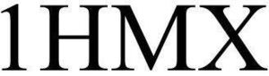

Trade Mark Journal No.2025/010 7 March 2025
WO0000001840024 (7,9,28,40,42)
Office of origin: United States of America
Date of International Registration:26 September 2024
Date of designation in the UK:
26 September 2024

International priority date claimed: 14 June 2024
(United States of America)
(98602676)
- Class 7
- Robotic exoskeleton suits, other than for medical purposes.
- Class 9
- Computer cursor control devices, namely, trackballs and touchpads, for controlling business, industrial, medical, military, residential, commercial, and educational equipment; electronic input controllers, control panels and other electronic devices, namely, push-button switch, light-emitting diode (LED), organic LED, micro-LED, and liquid crystal displays (LCD) displays; input control devices, namely, control panels; touch screens; touchscreen monitors; touchscreen sensors; touch displays; on glass controls; user interfaces, namely, slide potentiometers, encoders, keypads, keyboards, joysticks, touchscreens, computer touchscreens, rotaries, touch controls, and touchscreen interface indicators for electrotechnical and electronic devices; gesture sensing touch-free controls; computer hardware in the nature of input control devices, namely, keyboards and mice for controlling electronic equipment; computer devices and systems, namely, haptic interfaces, haptic interface devices, and haptic displays, for providing haptic feedback, namely, tactile feedback and force-feedback, with respect to real or virtual objects under computer control; hardware for use in developing, optimizing, extending, refining, and testing hardware applications, hapticly-enabled development tools, and hapticly-enabled computer information network multimedia interfaces for use with such devices and systems; virtual reality technology, namely, wearable haptic feedback clothing; sensing solutions, comprising biometric voice recognition systems, computer vision-based systems sensing technologies, and artificial intelligence and machine learning software, for user awareness capabilities, audience measurement, viewer analytics and touch-free gesture control in the IOT and smart home space; wireless communication technology enabled devices, namely, input control devices and user interfaces for electrotechnical and electronic devices.
- Class 28
- Gaming machines, gambling machines, slot machines, and replacement parts and replacement fittings for all of the foregoing; gaming machines, gambling machines, and slot machines containing specially adapted push-buttons, LCD buttons, touch screen button decks and displays, fiber-optic button decks, toppers, reel mechanisms, steppers, displays, LED game lights, coin acceptors, electronic LED signs, integrated printed circuit boards, driver boards, control boards, integrated connectors, integrated connection systems and switching systems, integrated lighting mechanisms and controls, integrated game data cables, integrated game USB cables and game cable connectors; parts and fittings for gaming machines, gambling machines, and slot machines, namely, video, LED and OLED gaming consoles and specially adapted displays for gambling and gaming machines, sold as a unit; parts and fittings for gaming machines, gambling machines and slot machines, namely, electronic and electromechanical gaming tables, betting terminals and lottery terminals; parts and fittings for gaming machines, gambling machines, and slot machines, namely, gaming and betting apparatus consoles.
- Class 40
- Custom manufacturing for others in the field of gaming machines, gambling machines, slot machines, and parts, fittings and replacement parts therefor.
- Class 42
- Product development consulting in the field of input control devices, user interfaces, embedded computer hardware and software, control panels, gesture control systems and applications, wireless connectivity technology, and wearable and body enhancement technology; research and development and consultation related thereto in the field of input control devices, user interfaces, embedded computer hardware and software, control panels, gesture control systems and applications, wireless connectivity technology, and wearable and body enhancement technology; development of new technology for others in the field of input control devices, user interfaces, embedded computer hardware and software, control panels, gesture control systems and applications, wireless connectivity technology, and wearable and body enhancement technology; engineering design services in the in the field of input control devices, user interfaces, embedded computer hardware and software, control panels, gesture control systems and applications, wireless connectivity technology, and wearable and body enhancement technology industries; custom design and engineering in the field of input control devices, user interfaces, embedded computer hardware and software, control panels, gesture control systems and applications, wireless connectivity technology, and wearable and body enhancement technology industries; design, development, engineering and testing for others in the fields of gaming machines, gambling machines, slot machines, and parts, fittings and replacement parts therefore; engineering services for others in the field of gaming machines, gambling machines, slot machines, and parts, fittings and replacement parts therefore.
Advanced Input Devices, Inc.
Representative: Rhett V. Barney Lee & Hayes, PC, 601 W. Riverside Ave., Suite 1400, Spokane WA 99201, UNITED STATES OF AMERICA